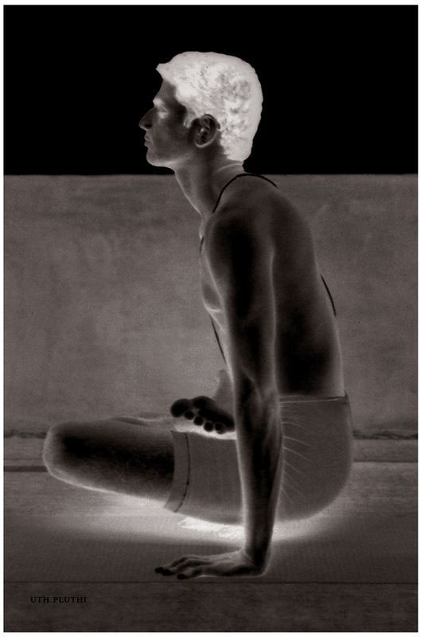

Baddha Padmasana is the asana to be practiced after Shirshasana. It is of two types: Baddha Padmasana and Kevala [Simple] Padmasana. Yoga Mudra occurs in Baddha Padmasana, and is therapeutic for diseases. Padmasana is useful for practices such as dhyana [meditation] and pranayama. It is also useful for the practices of the bandhas and mudras. Baddha Padmasana has sixteen vinyasas, the 8th of which is its state, and the 9th of which is Yoga Mudra, which is very important. Aspirants should note this.

METHOD
To begin, do the first six vinyasas of the first Surya Namaskara. Then, sit and stretch the legs out, as in Paschimattanasana, straighten the back and chest, and do rechaka and puraka; this is the 7th vinyasa. Next, place the right foot on the left thigh and the left foot on the right thigh, press the heels of both feet into the lower abdomen on either side of the navel, reach around the back, take hold of the left big toe with the left hand and the right big toe with the right hand, push the chest forward, straighten the spinal column and waist, bend the neck forward so that the chin presses into the chest, and do rechaka and puraka deeply; this is the 8th vinyasa. Then, doing rechaka slowly, place the chin on the floor, pull the navel in completely, stiffen and push the body all the way forward, and do puraka and rechaka; this is the 9th vinyasa, which is known as Yoga Mudra. Then, doing puraka and without letting go of the toes, lift the head up, sit up straight, and push the chest out; this is the 10th vinyasa. The next vinyasas follow those of preceding asanas.